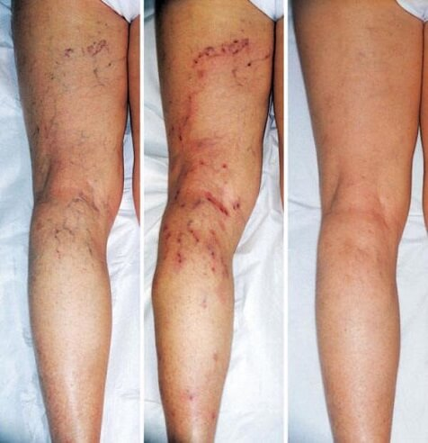
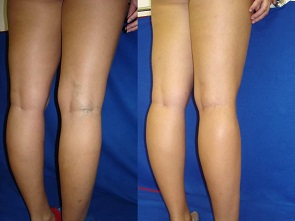

Η Μαρίνα Θεοδωράκη είναι διάσημη γυμνάστρια.
Η Μαρίνα Θεοδωράκη είναι διάσημη γυμνάστρια.
Η παγκόσμια πρωταθλήτρια κατάφερε να απαλλαγεί από κιρσούς σε μία μόνο εβοδμάδα. Επαγγελματική μέθοδος!
Υπάρχει θεραπεία για φλεβίτιδα, ακόμα κι αν είστε αθλητής, αν και υποφέρουν τα πόδια σας συνέχεια από ένταση, το ξέρω από προσωπική μου εμπειρία» δηλώνει η Μαρίνα Θεοδωράκη.
Η Μαρίνα Θεοδωράκη είναι διάσημη γυμνάστρια.
Η Μαρίνα Θεοδωράκη, η διάσημη νεαρή γυμνάστρια, η οποία έχει αναδειχθεί αρκετές φορές παγκόσμια πρωταθλήτρια του All-Around Παγκόσμιου Πρωταθλήματος. Η Μαρίνα είναι κάτοχος ρεκόρ, η πιο νεαρή γυμνάστρια που κατέκτησε χρυσό μετάλλιο στο Παγκόσμιο Πρωτάθλημα All-around
- Μαρίνα, το ρεκόρ είναι δικό σου, είσαι η πιο νεαρή γυμνάστρια - κάτοχος χρυσού μεταλλίου στο Πρωτάθλημα All-around!!! Πες μας δυο λόγια για την δουλειά σου.
- Η ρυθμική γυμναστική είναι το πιο ωραίο είδος γυναικείου αθλητισμού. Αναμφίβολα ζητά σκληρή δουλειά και πολλή προπόνηση, επειδή η εκτέλεση της κάθε κίνησης είναι δύσκολη. Δεν μπορώ να πάω σπίτι μέχρι να εκτελέσω την κάθε κίνηση, το κάθε στοιχείο στην εντέλεια, να αρέσει στον προπονητή μου. Εξασκούμαι για 5-6 ώρες κάθε μέρα.
- Μαρίνα, εξασκείσαι σκληρά. Έχεις παρουσιάσει ποτέ σου προβλήματα υγείας συνδεδεμένα με τόση πίεση;
- Φυσικά, η κάθε άσκηση επηρεάζει το σώμα και την υγεία. Ύστερα από ενάμιση χρόνο προπόνησης εμφανίστηκαν οι κιρσοί. Τα πόδια μου παρουσίαζαν μια εικόνα θλιβερή. Προτιμώ να μην το θυμηθώ! Οι φλέβες μου ήταν μπλε, πρησμένες, με έντονο πόνο!
 Η Μαρίνα ασχολείται με ρυθμική γυμναστική από παιδί (φώτο: προσωπικό αρχείο)
Η Μαρίνα ασχολείται με ρυθμική γυμναστική από παιδί (φώτο: προσωπικό αρχείο)
 Και να το αποτέλεσμα, κατά το χρονικό διάστημα που ασχολούμαι με γυμναστική (φώτο: προσωπικό αρχείο)
Και να το αποτέλεσμα, κατά το χρονικό διάστημα που ασχολούμαι με γυμναστική (φώτο: προσωπικό αρχείο)
- Φαντάζομαι, πόσο πολύ επιθυμούσες να απαλλαγείς από αυτούς!
-Ναι, φυσικά, είχα δοκιμάσει απ’όλα τα διαθέσιμα μέσα. Πανάκριβες μέθοδοι και αγωγές στο εξωτερικό. Δοκίμασα μάλιστα και σπιτικά γιατροσόφια. Τελικά, πείστηκα να προχωρήσω στην επέμβαση, αλλά ύστερα ως αποτέλεσμα δεν μπορούσα να προπονούμαι για αρκετό καιρό.
- Είχες καθόλου πρόοδο;
- Κανένα. Αρχικά φαίνονταν όλα να είναι καλά, σαν να πέτυχε η θεραπεία, δηλαδή όλα τα συμπτώματα εξαφανίστηκαν, αλλά σε ένα πολύ μικρό χρονικό διάστημα επέστρεψαν πάλι. Καμιά φορά γίνονταν και χειρότερα. Δυστυχώς εγώ δεν είχα ιδέα τι πρέπει να κάνω: δεν μπορούσα να προπονούμαι ούτε να αλλάξω την κατάσταση...
 Με την συνάδελφο και κολλητή στις προπονήσεις, την Ελισάβετ Βουλιώτη
Με την συνάδελφο και κολλητή στις προπονήσεις, την Ελισάβετ Βουλιώτη
- Και όσον αφορά την χειρουργική επέμβαση που έχεις υποβληθεί;
- Από τη μία, ήταν η καλύτερη μέθοδος απ’όσες είχα χρησιμοποιήσει. Αυτή η μέθοδος είναι όμως καλή σε περίπτωση που είναι δωρεάν, επειδή είναι πανάκριβη για τους κοινούς θνητούς. Και βέβαια χάνεις και πολύ χρόνο που δεν μπορείς να εξασκείσαι. Αυτή η μέθοδος είναι πάρα πολύ ακριβή, δεν είναι για όλους. Εγώ προσωπικά δεν έχω την πολυτέλεια να χάνω τόσες προπονήσεις και τόσα πρωταθλήματα. Με αυτό τον τρόπο κινδυνεύω να τερματίσω την αθλητική μου καριέρα! Μια φορά είναι και παραείναι αρκετή. Πάντως, η εγχείρηση δεν λύνει το πρόβλημα, απλά απομακρύνει τα συμπτώματα για λίγο.
- Βλέπωντας τα πόδια σου, υποθέτω ότι τελικά έχεις βρει την λύση του προβλήματος...
- Ναι, η συνάδελφος και η κολλητή μου, η αντίπαλός μου, όπως τη λένε οι άλλοι, η Ελισάβετ Βουλιώτη, με βοήθησε. Μια μέρα στην προπόνηση με πλησίασε να μου δώσει ένα μικρό κουτάκι λέγοντας: «Να, δοκίμασέ το, σε θέλουμε εδώ , όχι στο ιατρείο»
 Το αποτέλεσμα μετά την εγχείρηση (2η φώτο), το αποτέλεσμα μετά την γέλη (3η φώτο).
- Αυτό μόνο ήταν αρκετό να απαλλαγείς από τους κιρσούς; »
- Δεν είναι απίστευτο; Η γέλη, που μου συνέστησε η Ελισάβετ, βοήθησε πραγματικά!
- Και ποιος είναι ο τρόπος; Πες μας το μυστικό σου!
- Δεν υπάρχει κανένα μυστικό. Ήταν η επεγγελματική γέλη για αντιμετώπιση κιρσών και ευρυαγγειών, , είναι το προϊόν ιαπωνικής τεχνολογίας, αναπτύχθηκε σε συνεργασία με ευρωπαίους επιστήμονες . Θεωρείται η πιο ασφαλής μέθοδος αντιμετώπισης κιρσών χάρη στη σύστασή της. Τα συστατικά είναι απόλυτα φυσικά.
 Με την εθνική ομάδα μετά τη παράσταση στο παγκόσμιο πρωτάθλημα All-around.
Με την εθνική ομάδα μετά τη παράσταση στο παγκόσμιο πρωτάθλημα All-around.
- Ειλικρινά, έχεις απαλλαγεί από όλα τα προβλήματα μόνο και μόνο με βοήθεια μιας γέλης; Πώς λειτουργεί;
- Αλήθεια, έχω χρησιμοποιήσει μόνο την ! (ride, ndr). Αυτή η καταπληκτική γέλη καταπολεμά το πρόβλημα σταθερά, βελτιώνει την κυκλοφορία του αίματος και ομαλοποιεί την πίεση στις φλέβες. Με βοηθάει πολύ μετά τις πολύωρες προπονήσεις!
Δεν γνωρίζω τα πάντα για την φυσιολογία, για μένα έχει σημασία το ότι χάρη σ’αυτήν την γέλη έχω απαλλαχτεί από το πρόβλημα! Μπορείτε όμως να μάθετε περισσότερα για αυτό το προϊόν στην ιστοσελίδα του κατασκευαστή

- Μαρίνα, σε ποιο χρονικό διάστημα η χρήση της γέλης βοηθάει στην απομάκρυνση του προβλήματος με τις φλέβες; Πόσον καιρό πρέπει να χρησιμοποιείς την , για να δεις το αποτέλεσμα
- Πρέπει να την απλώνεις δυο φορές την ημέρα: το πρωί και το βράδυ πριν τον ύπνο.
Δεν θα το πιστέψεις, αλλά είχα παρατηρήσει μετά από 3 μέρες! Τα οιδήματα εξαφανίστηκαν και η εμφάνιση των ποδιών έγινε τέλεια Ένοιωθα πολύ καλά μετά τις προπονήσεις.
 Η Μαρίνα Θεοδωράκη
Η Μαρίνα Θεοδωράκη
- Δηλαδή σε 3 μόνο μέρες παρατήρησες την βελτίωση;
- Ναι. Ύστερα από άλλες 2 μέρες κατάλαβα ότι οι φλέβες στα πόδια σχεδόν δεν φαίνονται! Τώρα μπορώ να εργάζομαι ως μοντέλο!
- Πόσον καιρό σου πήρε να αναρρώσεις εντελώς;
- Δεν μέτρησα τις μέρες, πρέπει να είναι περίπου μια βδομάδα. Συνέχισα να απλώνω την γέλη για άλλες 3-4 μέρες, επειδή φοβόμουν πως θα εξαφανιστεί το αποτέλεσμα.
Έκανα όμως λάθος! Οι φλέβες δεν με ενοχλούν πια. Έχω ξεχάσει τελείως για αυτές και ξεκίνησα μια καινούρια ζωή! (Χαμογελάει)
- Θα ήθελες να ευχηθείς κάτι στις αναγνώστριές μας;
- Θα ήθελα να πω, ότι δεν είναι απλά ένα μείγμα συστατικών, που αποτελούν την γέλη αυτήν, που θεραπεύει τις φλέβες – κιρσούς και ευρυαγγεία. Η σύσταση και η τεχνολογία είναι μοναδικές, οι επιστήμονες σταθεροποιούν τα συστατικά με μοναδικό τρόπο. Γιαυτό να προσέχετε, υπάρχουν πολλές κρέμες «μαϊμού»! Είναι πολύ σημαντικό να αγοράζετε μια γέλη η οποία κατέχει όλα τα απαραίτητα πιστοποιητικά: εγώ την παραγγέλνω μόνο στην επίσημη ιστοδελίδα του κατασκευαστή . Αυτό το προϊόν είναι αποτελεσματικό, με 100% εγγύηση, δεν είναι «μαϊμού» .
Σας εύχομαι να βρείτε τον εαυτό σας, και να νικήσετε τους απαίσιους κιρσούς! Όλα θα είναι μια χαρά, αρκεί να το πιστεύετε! Η καλύτερη αμοιβή είναι το να αισθάνεσαι καλά. Τι ωραία είναι να ξυπνάς με καλή διάθεση! Και το πιο σημαντικό είναι να καταλάβετε ότι θα το κάνετε μόνοι σας, μπορείτε!
Ελπίζω πως η εμπειρία μου θα σας βοηθήσει και θα βρείτε δύναμη για να καταπολεμήσετε την ασθένεια! Καλή δύναμη και καλή επιτυχία σε όλους στην αντιμετώπιση των κιρσών!
2020
Σχόλια
Γεια σου Μαρίνα, είσαι μια γλυκιά κοπέλα και ταλαντούχα γυμνάστρια! Η ιστορία σου με εμψύχωσε πολύ! Έχω το ίδιο πρόβλημα με τις φλέβες στα δυο πόδια, το δεξί όμως με ενοχλεί περισσότερα: πονάει η περιοχή από το βουβώνα ως το γόνατο, τα βράδια ο πόνος γίνεται ανυπόφορος. Δεν έχω κλείσει ραντεβού όμως στον γιατρό, λέω να δοκιμάσω πρώτα καμιά θεραπεία σπιτική. Θα γράψω αργότερα να σου πω αν πέτυχα
Ευχαριστώ, Μαρίνα! Χτές παρέλαβα την παραγγελία μου. Όλα εντάξει. Ξεκίνησα να την χρησιμοποιώ. Περιμένω να δω το αποτέλεσμα εντός 5 ημερών J!
Πρέπει οπωσδήποτε να φοράτε παπούτσι χωρίς ή με πολύ χαμηλό τακούνι. Τέτοιου είδους προβλήματα δημιουργούνται από το ψηλό τακούνι! Σκέφτεστε μόνο τις φοβερές γόβες που θα αγοράσετε, και ύστερα παραπονιέστε για τα απαίσια σας πόδια.
Γεια σου Μαρίνα! Έχω παραγγείλει την γέλη.
Περιμένω με αγωνία να την παραλάβω! :)
Η κόρη μου μου έφερε αυτή την γέλη από την Ιαπωνία, δεν είναι το κάτι νέο!
Υπέροχα! Εγώ την παράγγειλα και έχω ήδη αρχίσει να την χρησιμοποιώ . Σε μια δυο μέρες θα σας πω για την πρόοδο μου.
Το προϊόν δεν είναι κανούργιο, όλοι το γνωρίζουν. 2 χρόνια πριν η μητέρα μου έλυσε το πρόβλημα των κιρσών χάρη σ’αυτό.
Εδώ στις ΗΠΑ χρησιμοποιούμε αυτή τη γέλη πάνω από 5 χρόνια. Όλες οι κοπέλες στο γραφείο μου μοιάζουν με σταρ του Χόλιγουντ!
Καλημερούδια σε όλους... βάζω την γέλη για 3 μέρες... και δεν ξέρω πώς να εκφράσω την ευγνωμοσύνη μου! Χιλιοευχαριστώ Μαρίνα μου! Τα ποδαράκια μου είναι σαν καινούρια!
Μετά από 4 μέρες χρήσης ολοφάνερο το αποτέλεσμα! Οι γάμπες μου είναι υπέροχες! Είμαι πολύ ευτυχισμένη!
Αγόρασα την κρεμούλα και τη λατρεύω! Μόνο μια εβδομάδα έχει περάσει και βελτιώθηκε η κατάσταση αμέσως. Ποιος θα το φανταζόταν... εγώ πάντως δεν το περίμενα. Δεδομένης της τιμής του... είναι ένα δώρο.
Μαρίνα, εγώ ανακάλυψα αυτή την γέλη προ πολλού, όταν την αγόρασα στην Κίνα. Οι κιρσοί εξαφανίστηκαν έτσι απλα, δεν είναι φοβερόοοοο αυτο; Τη συνιστώ! Σε όλες!
Ο άντρας μου ένθουσιαστηκε πολύ! Μου λέει ότι πρέπει να συμμετάσχω στον διαγωνισμό «Μις Όμορφα Πόδια», χαχα
λειτουργεί, παράγγειλα στην επίσημη ιστοσελίδα χωρίς προπληρωμή, και το πακέτο έφτασε εντός 6 ημερών. Οι φλέβες έφυγαν σε 1 βδομάδα.
Δεν είμαι μόνη! Έχω ξεφορτωθεί το πρόβλημα ποδιών σε μια εβδομάδα. Δεν το έχω συνηθίσει ακόμη. :-D
Τα πόδια μου δεν πονάνε πια και φαίνονται πολύ ωραία. Απίστευτα! Συνιστώ σε όλα τα κορίτσια !
Κι εγω ξέρω την . Η θεία μου δεν παραπονιέται πια ότι πονάνε τα πόδια της. (-;
Χαίρετε! Αυτή η γέλη είναι η καλύτερη, μόνο μια βδομάδα περίμενα να απαλλαχτώ από τον νόσο.
Συγκλονιστικό! Οι γάμπες μου τώρα είναι υγιείς και ωραίες. Εν τω μεταξύ το δέμα το έλαβα εντός 3 ημερών.
Καλημέρα σας, κυρίες μου! Τα πόδια της γυναίκας μου έγιναν τέλεια με αυτή την γέλη που αγόρασε. Δεν περιγράφεται με λόγια πόσο χαρούμενος είμαι. Συνιστώ!
τίποτα καινούριο! Κάθε γυναίκα ξέρει αυτή την γέλη. Αν υπάρχει καμιά που δεν ξέρει, σημαίνει ότι δεν θέλει να αναρρώσει.
Ευχαριστώ για το άρθρο. Μαρίνα, είσαι η καλύτερη! Σου εύχομαι καλή επιτυχία στην καριέρα σου. Τρέχω να παραγγείλω την κρεμούλα.
Είναι ακριβώς αυτό που ήθελα! Όλοι θα με ζηλεύον!
Αυτή η γέλη είναι πολύ δημοφιλής στην Κίνα, και είναι κι αποτελεσματική! Εμείς όπως πάντα μαθαίνουμε τα νέα τελεταίοι, έναν αιώνα περιμένουμε για να λάβουμε εδώ τα προϊόντα...